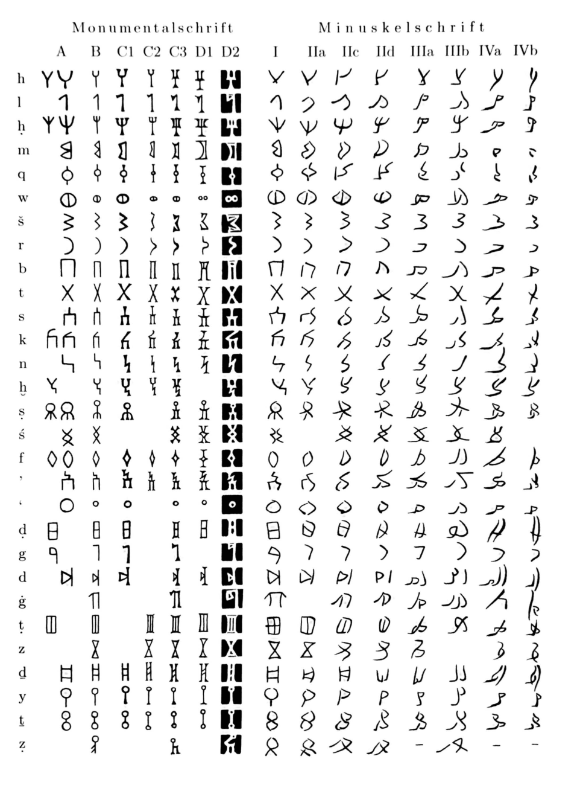

Ancient South Arabian Fonts
Ancient South Arabian (𐩣𐩯𐩬𐩵, mśnd, or musnad) was the script used to write a variety of Old South Arabian languages (from the second millenium BCE to the sixth century CE), including Sabaic, Qatabanic, and Ge'ez, and is the ancestor of the writing systems used for a number of modern-day South Semitic languages, like Amharic and Tigrinya. It's primarily read from right to left, and as an abjad lacks any symbols for vowels. In Unicode, U+10A60 to U+10A7F cover the 32 characters (𐩠𐩡𐩢𐩣𐩤𐩥𐩦𐩧𐩨𐩩𐩪𐩫𐩬𐩭𐩮𐩯𐩰𐩱𐩲𐩳𐩴𐩵𐩶𐩷𐩸𐩹𐩺𐩻𐩼𐩽𐩾𐩿) — however, their depiction in most fonts is based on the "monumental" or majuscule version of the scripts, as seen in columns A to D below.
There also exists another "cursive" variant, however, referred to as Zabūr, used when writing on palm leaves or papyrus. Below are three different fonts for the script, designed on the basis of three different varieties of Zabūr as depicted on the above page of Lehrbuch der sabäischen Sprache by Peter Stein. Zabur1 is based on column I, Zabur2 is based on column IIIa, and Zabur3 is based on column IVa.
Zabur1: 𐩠𐩡𐩢𐩣𐩤𐩥𐩦𐩧𐩨𐩩𐩪𐩫𐩬𐩭𐩮𐩯𐩰𐩱𐩲𐩳𐩴𐩵𐩶𐩷𐩸𐩹𐩺𐩻𐩼𐩽𐩾𐩿
Zabur2: 𐩠𐩡𐩢𐩣𐩤𐩥𐩦𐩧𐩨𐩩𐩪𐩫𐩬𐩭𐩮𐩯𐩰𐩱𐩲𐩳𐩴𐩵𐩶𐩷𐩸𐩹𐩺𐩻𐩼𐩽𐩾𐩿
Zabur3 𐩠𐩡𐩢𐩣𐩤𐩥𐩦𐩧𐩨𐩩𐩪𐩫𐩬𐩭𐩮𐩯𐩰𐩱𐩲𐩳𐩴𐩵𐩶𐩷𐩸𐩹𐩺𐩻𐩼𐩽𐩾𐩿
The above fonts are made available under version 1.1 of the SIL Open Font License.